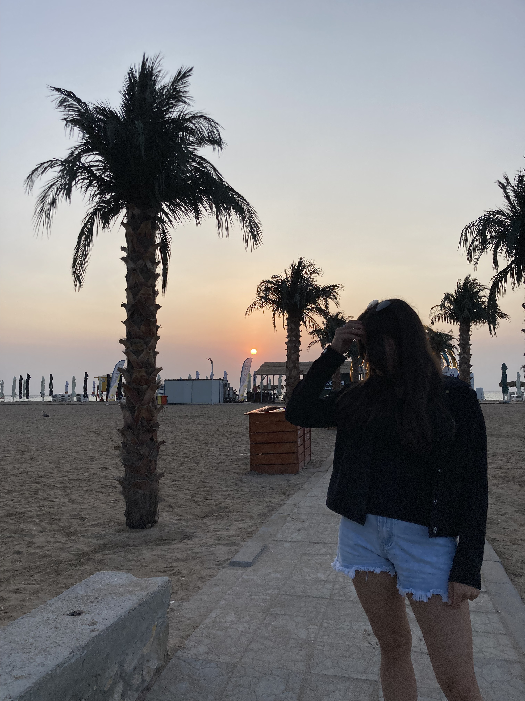

4 septembrie 2024
Costinești
💜 Te iubesc pentru razele de soare pe care mi le aduci după furtunile fără sfârșit 💜
Nu a fost deloc ușor. Îndrăznesc sa spun ca a fost una dintre cele mai dure veri din viața noastră, care ne-a permis sa simțim din gustul amar al lumii de adult.
Dar totuși am reușit. Am reușit sa fim asumați si sa trecem cu cate un pas peste provocările dureroase ale acestei experiențe. Dar cel mai important, după o
perioada atât de greu de digerat, am reușit sa ne bucuram de cea mai plăcută vacanță pe care ne-am dăruit-o reciproc. Ma încântă gandul ca am fost alături de
tine, privindu-ți fericirea pură când ai admirat pentru prima data orizontul infinit al mării.